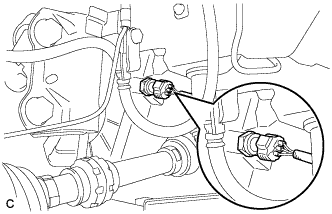

Oil Pressure Sensor Installation |
| 1. Install Oil Pressure Sensor |
 |
Apply CVT Fluid TC to the O-ring and install it to the oil pressure sensor.
Install the oil pressure sensor.
Connect the oil pressure sensor connector.
| 2. Install Engine Under Cover Rear LH |
Install the engine under cover rear LH with the 5 clips.
| 3. Install Front Tire LH |
| 4. A/T/CVT Learned Value Initialization, G Sensor 0-point Learning and CVT Hydraulic Pressure Learning |
)